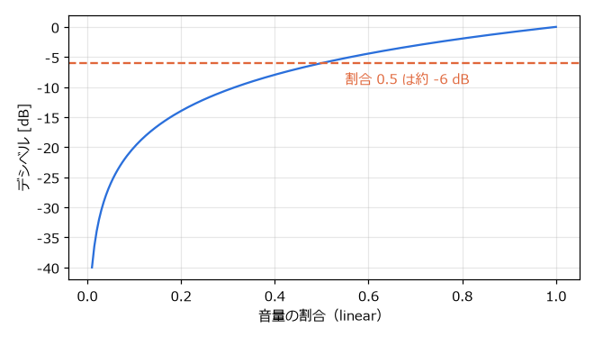
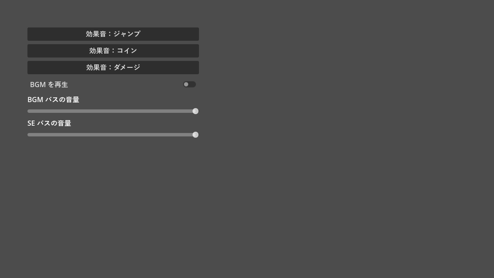

第 14 章 サウンド
効果音と BGM は、ゲームの手応えと雰囲気を大きく左右する。本章では、音を再生するノード、音量をまとめて管理するオーディオバス、音量の単位であるデシベルについて説明する。サンプルは chapter14 フォルダーにある。
音声ファイルの形式
Godot は、次の形式の音声ファイルをインポートできる。
形式 |
特徴と用途 |
|---|---|
WAV |
圧縮しない形式。再生の負荷が小さく、遅延も少ない。短い効果音に向く。 |
Ogg Vorbis |
圧縮した形式。ファイルが小さい。BGM や長い音声に向く。 |
MP3 |
圧縮した形式。Ogg Vorbis と同様に BGM などに使える。 |
BGM を繰り返し再生（ループ）するかどうかは、音声ファイルのインポート設定で決める。ファイルシステムドックでファイルを選び、「インポート」ドックで WAV なら「Loop Mode」、Ogg Vorbis と MP3 なら「ループ」を設定して、「再インポート」を押す。
本書のサンプルの音声は、tools/generate_assets.py で作った WAV ファイルで、ループしない設定で読み込んでいる。そのため、BGM は再生が終わったときに発行される finished シグナルで、最初から再生し直している。
音を再生するノード
音を再生するには、次のノードを使う。「ストリーム」（stream）に音声ファイルを設定し、play() で再生する。
ノード |
特徴 |
|---|---|
|
位置を持たない。どこで鳴っても同じ音量で聞こえる。BGM や UI の効果音に使う。 |
|
2D 空間の位置を持つ。画面の中心（カメラ）からの距離に応じて音量が下がり、左右の位置に応じて聞こえる方向が変わる。 |
|
3D 空間の位置を持つ。 |
プロパティ |
内容 |
|---|---|
ストリーム（stream） |
再生する音声 |
ボリューム dB（volume_db） |
音量。単位はデシベル（後述） |
ピッチスケール（pitch_scale） |
再生速度と音の高さ。2.0 で 1 オクターブ高く、速くなる。 |
自動再生（autoplay） |
シーンの開始時に自動で再生する。 |
バス（bus） |
出力先のオーディオバス（後述） |
max_polyphony |
同時に重ねて再生できる数。既定値は 1 で、再生中に |
効果音を素早く連続して鳴らすと、max_polyphony が 1 のままでは前の音が途切れる。重ねて鳴らしたい場合は、この値を大きくする。同じ効果音を毎回少しずつ変えたい場合は、pitch_scale を randf_range(0.9, 1.1) のようにランダムにすると、単調さを抑えられる。
オーディオバス
オーディオバス（audio bus）は、音の通り道である。各プレイヤーの音はいずれかのバスに送られ、バスで音量の調整やエフェクトの処理を受けてから、最終的に Master バスに集められて出力される。
図 27 サンプルプロジェクトのオーディオバスの構成
BGM と効果音を別のバスに分けておくと、設定画面で「BGM の音量」と「効果音の音量」を別々に変えられる。バスは、下部パネルの「オーディオ」で「バスを追加」を押して作る。バスにはリバーブ（残響）やコンプレッサーなどのエフェクトも追加できる。バスの構成はプロジェクトのフォルダーの default_bus_layout.tres に保存される。
デシベル
Godot の音量は、デシベル（dB）で表す。0 dB が元の音量で、マイナスにすると小さくなる。デシベルと、元の音量に対する割合（振幅の比）の関係は次の式で表される。
割合が 0.5（半分）のとき約 -6 dB、0.1 のとき -20 dB になる。割合が 0 に近づくと、デシベルはマイナス無限大に向かう。


図 28 音量の割合とデシベルの関係
設定画面のスライダーは 0 ～ 1 の割合で扱うほうが分かりやすいので、linear_to_db() で割合をデシベルに変換してから設定する。逆の変換は db_to_linear() で行う。なお、プレイヤーの volume_linear プロパティや、AudioServer.set_bus_volume_linear() を使うと、割合のまま設定することもできる。
サンプル
audio_demo.tscn は、3 種類の効果音のボタン、BGM の再生・停止の切り替え、バスごとの音量のスライダーを並べたサンプルである。
1extends Control
2## 効果音と BGM を鳴らし、オーディオバスごとに音量を変えるサンプル。
3
4@onready var _bgm_player: AudioStreamPlayer = $BGMPlayer
5@onready var _se_player: AudioStreamPlayer = $SEPlayer
6
7
8func _ready() -> void:
9 %JumpButton.pressed.connect(_play_se.bind(preload("res://assets/jump.wav")))
10 %CoinButton.pressed.connect(_play_se.bind(preload("res://assets/coin.wav")))
11 %HitButton.pressed.connect(_play_se.bind(preload("res://assets/hit.wav")))
12 %BGMButton.toggled.connect(_on_bgm_toggled)
13 %BGMVolume.value_changed.connect(_set_bus_volume.bind("BGM"))
14 %SEVolume.value_changed.connect(_set_bus_volume.bind("SE"))
15 # BGM の素材はループしない設定で読み込まれるので、再生が終わったら最初から流し直す。
16 _bgm_player.finished.connect(_bgm_player.play)
17
18
19func _play_se(stream: AudioStream) -> void:
20 _se_player.stream = stream
21 _se_player.play()
22
23
24func _on_bgm_toggled(enabled: bool) -> void:
25 if enabled:
26 _bgm_player.play()
27 else:
28 _bgm_player.stop()
29
30
31## スライダーの値（0 から 1 の割合）をデシベルに変換してバスの音量に設定する。
32func _set_bus_volume(ratio: float, bus_name: String) -> void:
33 var bus_index := AudioServer.get_bus_index(bus_name)
34 AudioServer.set_bus_volume_db(bus_index, linear_to_db(ratio))
35 AudioServer.set_bus_mute(bus_index, ratio <= 0.0)
9 行目から 11 行目では、3 つのボタンの pressed シグナルを同じ _play_se() に接続し、鳴らす音声を bind() で渡している（第 7 章 GDScript の応用）。音量のスライダーも同様に、bind() でバスの名前を渡している。シグナルの引数（スライダーの値）が先に渡され、bind() で追加した引数はその後ろに渡される。
_set_bus_volume() では、AudioServer.get_bus_index() でバスの名前から番号を求め、set_bus_volume_db() で音量を設定している。割合が 0 のときは linear_to_db() がマイナス無限大を返すので、念のためバスをミュートしている。


図 29 audio_demo.tscn の実行結果